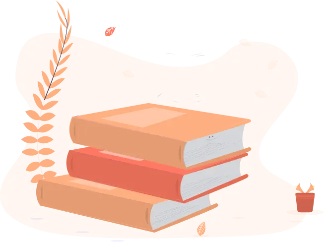

Hi there,
I'm Manuel.
I am a


Who I am
I'm Manuel Fahmy and I'm currently studying computer science at FH Aachen while also working as a Javascript & C# developer.
fun facts about me
Learning new things
A core philosophy of mine is to always keep on learning new things.

Coding is life
Through coding I can create new things and solve problems. It also frequently provides new challenges for me to tackle.

Music is nice
Composing and playing music is great for thinking and relaxing. Especially great to clear your head after coding for an extensive amount of time.

What I do
Currently, I focus on learning pentesting while also continuing to learn fullstack web development.
my latest projects
Please enable Javascript.Contact me
If you're interested in working with me, or for any other reason, feel free to contact me.